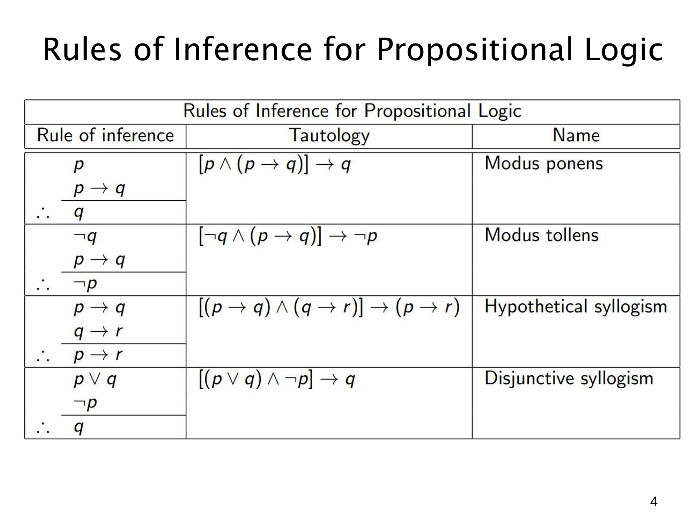

L1.3 · 第 4 页讲解原文
查看这一页课件

命题逻辑的四条基本推理规则
这页原图是一张表，文字层只抽出了标题。表的左列写“前提之下得到结论”的推理形式，中列给出保证其有效的永真式，右列是规则名称。
肯定前件（modus ponens）：已知 p 和 p→q，可推出 q。对应的永真式是 [p∧(p→q)]→q。如果 p 已发生，而“若 p 则 q”也真，q 就必须发生。
否定后件（modus tollens）：已知 ¬q 和 p→q，可推出 ¬p。对应 [¬q∧(p→q)]→¬p。若 p 为真本应带来 q，但现在 q 假，故 p 不可能真。这用到 p→q 与其逆否命题 ¬q→¬p 等价。
假言三段论（hypothetical syllogism）：已知 p→q 与 q→r，可推出 p→r。对应 [(p→q)∧(q→r)]→(p→r)。它把两段条件关系接成一条链，并没有断言 p 现在已经为真。
析取三段论（disjunctive syllogism）：已知 p∨q 与 ¬p，可推出 q。对应 [(p∨q)∧¬p]→q。因为“或”至少一项为真，而 p 已排除，剩下的 q 必真。
使用时应先逐项核对前提形状，尤其不能把肯定前件误用为“已知 q 和 p→q，所以 p”；也不能从 p∨q 和 p 推出 ¬q，因为普通逻辑“或”允许两项同时为真。